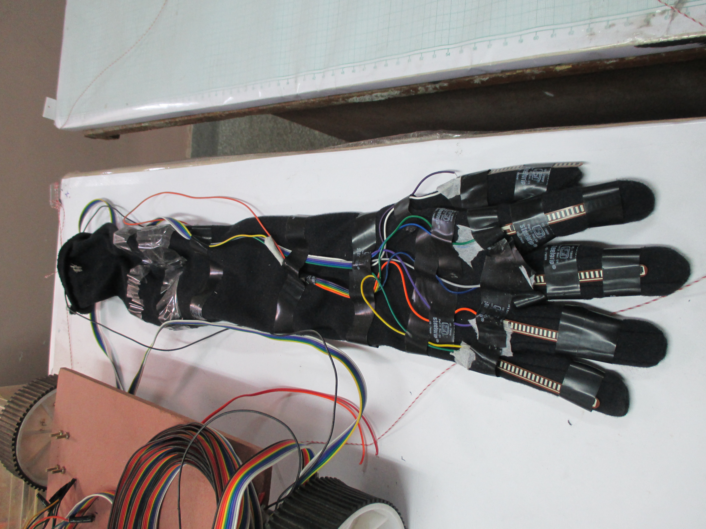
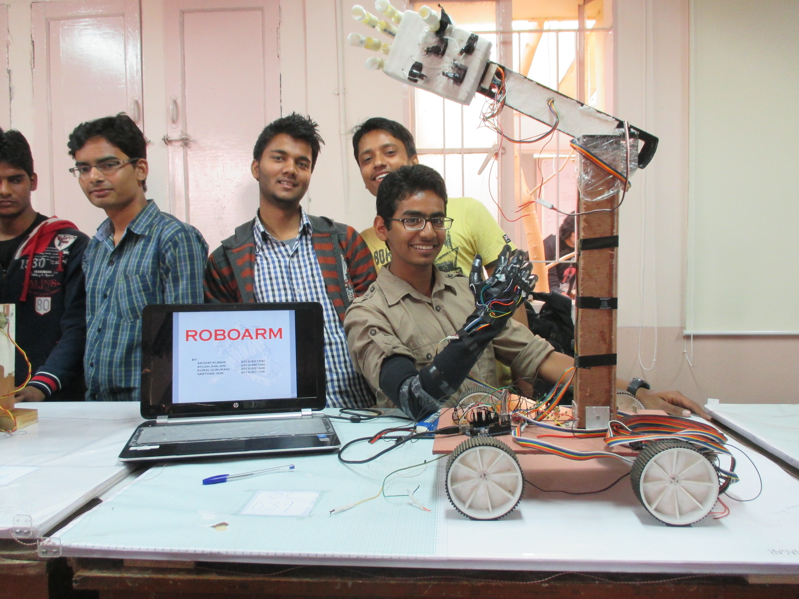
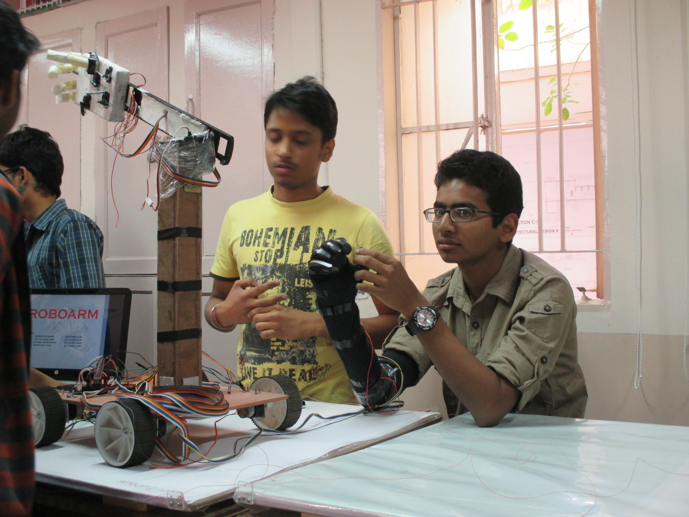
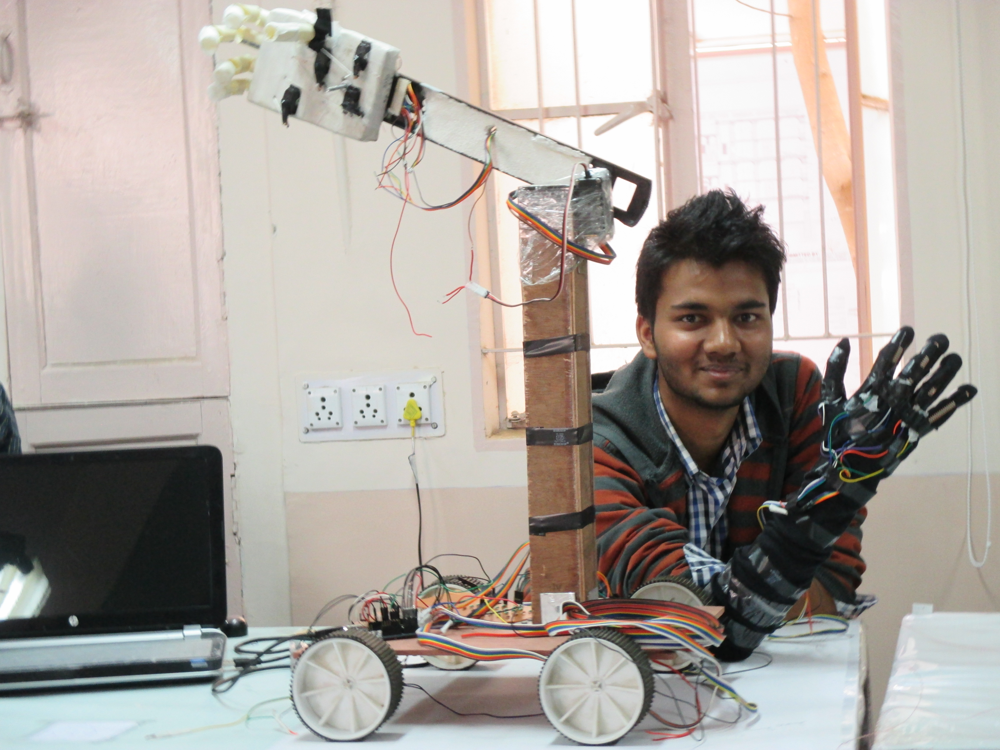

FEBRUARY-MARCH 2014 | ZINE LAB | MNIT JAIPUR
ABOUT THE EVENT
The event Tech-Expo was a student innovation contest organised at MNIT JAIPUR during its anual Techno-Cultural Fest - BLitzschalg '14. The objective was to propose an engineering solution to any existing world problem or assist the same.
OBJECTIVE
Building a robotic arm capable of replicating the motion of human arm using a sensor powered pair of gloves
RESEARCH ASPECTS
• Used adaptive local minima and maxima algorithm to map flex sensor and artifical arm motion that accounted for the erratic nature of the flex sensor
• 2.2" Flex sensors used for sensing the movement of the fingers
• Low torque servo motors for actuation of the fingers of the artificial robotic arm
• Setup has 15 degrees of freedom with all the 3 joints of an individual finger steered by a single actuator using wire for power transmission
• Processing done via Arduino micro-controller
METHODOLOGY
The arm was designed just as a human arm with fingers and the palm. The fingers were powered using low power servo motors and had an actuated wrist as well. The arm was controlled using a glove with flex sensors that could map the motion of the finger to that of the motion of the fingers of the artificial robotic arm using a micro-controller based decision-making system
RESULTS
• The setup had mediocre efficiency and performance• Won the runners up prize for our innovative Robotic Arm in Tech-Expo '14 as a freshman
• Renovated the design with better 3D printed parts for efficient and better performance
GALLERY
   